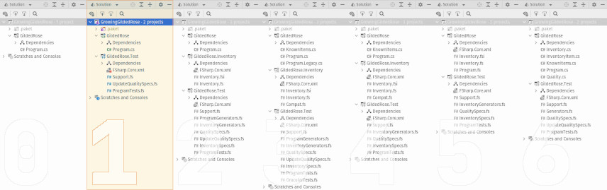

This is part one-of-four in the series, Growing a Gilded Rose. Over the course of these four blog posts, I hope to demonstrate incrementally improving a legacy code base which has thorny requirements, while also presenting a few different software development tools or concepts. The full series is as follows:
- Make it Testable (this post)
- Next Year's Model
- When Worlds Collide
- A New Requirement Appears
Bonus Content

Overview
For the next several posts we'll be working against the Gilded Rose Kata. So, it behooves us to understand the requirements, reproduced here in their entirety (emphasis added):
Hi and welcome to team Gilded Rose. As you know, we are a small inn with a prime location in a prominent city ran by a friendly innkeeper named Allison. We also buy and sell only the finest goods. Unfortunately, our goods are constantly degrading in quality as they approach their sell by date. We have a system in place that updates our inventory for us. It was developed by a no-nonsense type named Leeroy, who has moved on to new adventures. Your task is to add the new feature to our system so that we can begin selling a new category of items. First an introduction to our system:
- All items have a SellIn value which denotes the number of days we have to sell the item
- All items have a Quality value which denotes how valuable the item is
- At the end of each day our system lowers both values for every item
Pretty simple, right? Well this is where it gets interesting:
- Once the sell by date has passed, Quality degrades twice as fast
- The Quality of an item is never negative
- “Aged Brie” actually increases in Quality the older it gets
- The Quality of an item is never more than 50
- “Sulfuras”, being a legendary item, never has to be sold or decreases in Quality
- “Backstage passes”, like aged brie, increases in Quality as it's SellIn value approaches; Quality increases by 2 when there are 10 days or less and by 3 when there are 5 days or less but Quality drops to 0 after the concert
We have recently signed a supplier of conjured items. This requires an update to our system:
- “Conjured” items degrade in Quality twice as fast as normal items
Feel free to make any changes to the UpdateQuality method and add any new code as long as everything still works correctly. However, do not alter the Item class or Items property as those belong to the goblin in the corner who will insta-rage and one-shot you as he doesn't believe in shared code ownership (you can make the UpdateQuality method and Items property static if you like, we'll cover for you).
Just for clarification, an item can never have its Quality increase above 50, however “Sulfuras” is a legendary item and as such its Quality is 80 and it never alters.
Overall, this seems straight-forward. There are different kinds of items. And
each kind has different rules for how it changes over time. At some point,
we'll need to add a new set of rules for a new kind of item. But first, let's
look at the “meat” of the program, the method UpdateQuality:
public void UpdateQuality()
{
for (var i = 0; i < Items.Count; i++)
{
if (Items[i].Name != "Aged Brie" && Items[i].Name != "Backstage passes to a TAFKAL80ETC concert")
{
if (Items[i].Quality > 0)
{
if (Items[i].Name != "Sulfuras, Hand of Ragnaros")
{
Items[i].Quality = Items[i].Quality - 1;
}
}
}
else
{
if (Items[i].Quality < 50)
{
Items[i].Quality = Items[i].Quality + 1;
if (Items[i].Name == "Backstage passes to a TAFKAL80ETC concert")
{
if (Items[i].SellIn < 11)
{
if (Items[i].Quality < 50)
{
Items[i].Quality = Items[i].Quality + 1;
}
}
if (Items[i].SellIn < 6)
{
if (Items[i].Quality < 50)
{
Items[i].Quality = Items[i].Quality + 1;
}
}
}
}
}
if (Items[i].Name != "Sulfuras, Hand of Ragnaros")
{
Items[i].SellIn = Items[i].SellIn - 1;
}
if (Items[i].SellIn < 0)
{
if (Items[i].Name != "Aged Brie")
{
if (Items[i].Name != "Backstage passes to a TAFKAL80ETC concert")
{
if (Items[i].Quality > 0)
{
if (Items[i].Name != "Sulfuras, Hand of Ragnaros")
{
Items[i].Quality = Items[i].Quality - 1;
}
}
}
else
{
Items[i].Quality = Items[i].Quality - Items[i].Quality;
}
}
else
{
if (Items[i].Quality < 50)
{
Items[i].Quality = Items[i].Quality + 1;
}
}
}
}
}
Yikes!!! That's... kind of intimidating. And there are no tests. Fortunately, that's the goal of this post. In fact, we will take the following steps to help us start getting things under control:
- Change the program to have some level of observability.
- Add a very quick-and-dirty version of an approval test.
- Add property-based tests to cover some of the program logic.
We won't change the logic in the UpdateQuality method. But we'll hopefully
come away with a better understanding of how it works. And, if we're lucky,
we'll begin to feel a bit more comfortable making bigger changes.
The code, as it stands before we've done anything, is available in the
companion repository, in a branch called 0_original.
Modifying the Program
One issue we face, before adding any tests, is that we require the test subject
(i.e. the inventory program) to be somehow observable. Currently, it is a
“black box”. We turn it on and it does... stuff?!
¯\(ツ)/¯
In order to remedy this, we will change the program's entry point slightly. Here's how Leeroy left it (n.b. comments added solely for this blog post):
IList<Item> Items; // ⮜⮜⮜ REMEMBER -- this cannot be changed!
static void Main(string[] args)
{
System.Console.WriteLine("OMGHAI!");
var app = new Program()
{
Items = new List<Item>
{
new Item {Name = "+5 Dexterity Vest", SellIn = 10, Quality = 20},
new Item {Name = "Aged Brie", SellIn = 2, Quality = 0},
new Item {Name = "Elixir of the Mongoose", SellIn = 5, Quality = 7},
new Item {Name = "Sulfuras, Hand of Ragnaros", SellIn = 0, Quality = 80},
new Item
{
Name = "Backstage passes to a TAFKAL80ETC concert",
SellIn = 15,
Quality = 20
},
new Item {Name = "Conjured Mana Cake", SellIn = 3, Quality = 6}
}
};
app.UpdateQuality();
System.Console.ReadKey();
}
Well, that's certainly easier to digest than UpdateQuality. As for adding
“observability”, we can simply print the freshly updated inventory to STDOUT
before exiting. Here's how that looks:
public static void Main()
{
// ... other code elided ...
app.UpdateQuality();
foreach (var item in app.Items)
{
WriteLine($"Item {{ Name = {item.Name}" +
$", Quality = {item.Quality}" +
$", SellIn = {item.SellIn} }}");
}
WriteLine("Press <RETURN> to exit.");
ReadLine();
}
There's nothing terribly special here. We add a simple foreach loop to
iterate over all of the inventory, and each Item is pretty-printed to the
console output. The only thing of note is the use of WriteLine. But this is
just leveraging C#'s “static imports” feature to drop some boilerplate.
As we'll see in the next section, that's enough for us to start gaining some
confidence when we (eventually) replace the other parts of the program.
Adding an Approval Test
Before we actually write any tests, we'll need to add an F# test project. This can be done via the command line, or the IDE of your choosing. As this is very well documented elsewhere, we won't cover it here. Additionally, the companion repository uses the excellent dependency manager, Paket. However, that is not a requirement, nor does it have any impact on the rest of the blog series.
No matter how we get going, the important thing is that the test project winds up with the following dependencies:
Projects:
- GildedRose.csproj (our legacy C# program)
Packages:
- FsCheck.XUnit
- Microsoft.NET.Test.Sdk
- xUnit
- xUnit.Runner.VisualStudio
Beyond the obvious (our legacy project), most of these dependencies are just
infrastructure to connect our test project to the various test runners and IDE
tooling one might normally encounter. However, it's worth talking a bit about
that first package, FsCheck.xUnit. FsCheck is a library for testing .NET code,
which offers the ability to employ a number of different testing styles. We'll
get into the details later, but this library provides all the actual
functionality we'll use when writing our various tests.
As a baseline, we'll create a crude approximation of an approval test. Effectively, we'll capture a program's output (hence the changes we made above). Then we'll compare that output to a previously-acquired “known good” copy of the output. If things match, we're golden. If not, we have to carefully consider what changed. This is normally an iterative process, wherein every time we get a new “successful” output, it becomes the value which is persisted (to be used in future test runs). There are libraries and tooling to simplify all this for us. However, for now, we will simply hard-code a string literal in our test, and use that as a basis for comparison. The test itself follows:
type ProgramTests() =
[<Property(MaxTest=1)>]
member _.`Program output meets baseline approval` () : bool =
// arrange
let buffer = StringBuilder()
use writer = new StringWriter(buffer)
use reader = new StringReader(NewLine)
Console.SetOut(writer)
Console.SetIn(reader)
// act
Program.Main()
// assert
let expected = "OMGHAI!
Item { Name = +5 Dexterity Vest, Quality = 19, SellIn = 9 }
Item { Name = Aged Brie, Quality = 1, SellIn = 1 }
Item { Name = Elixir of the Mongoose, Quality = 6, SellIn = 4 }
Item { Name = Sulfuras, Hand of Ragnaros, Quality = 80, SellIn = 0 }
Item { Name = Backstage passes to a TAFKAL80ETC concert, Quality = 21, SellIn = 14 }
Item { Name = Conjured Mana Cake, Quality = 5, SellIn = 2 }
Press <RETURN> to exit.
"
let actual = string buffer
expected = actual |@ $"{NewLine}{expected}{NewLine}{actual}"
There's quite a bit that may be new here. So let's highlight the most important
pieces. We define a simple class (ProgramTests), with a default constructor.
It contains an instance method (Program output meets baseline approval), which
contains the body of our test. The attribute [<Property(MaxTest=1)>] is a bit of
FsCheck shining through. Effectively, it means “run this test once and check
whether the output is alright”. Next, we have some procedural code (lines 5
though 9, inclusive) which tells our system-under-test to read and write from
an in-memory buffer (instead of standard “in” and “out”). Then we perform one
run of our actual program (line 12). After this comes our “known good” output
(again, here we use a string literal... but anything more demanding should use
a dedicated library). Finally, we do a simple string comparison to see if
actual and expected outputs are the same. In F#, the equals operator (( = )),
when applied to strings, is equivalent to System.String.CompareOrdinal;
it performs a comparison which is case-sensitive and culture-insensitive.
But what's the funny symbol on the last line of the test? That's how FsCheck
attaches a label to a property. This is just some extra metadata (the
interpolated string to the right of the |@ symbol), which is printed in the
event of the test failing. It's a useful diagnostic, nothing more. Also, it's
worth noting, the symbolic operator is only used in F#. In C# and other .NET
languages, FsCheck provides an extension method, called .Label(...), which
serves the exact same purpose.
And there you have it, the most fledgling of assurances. A super-basic safety blanket. It's both a small thing and a huge improvement. However, string literals aren't amazing. So, readers are highly encouraged to take what's been done here and evolve it to leverage a proper approval testing library.
Adding Property-Based Tests
Approval testing is a fantastic way to start taming a legacy code base -- especially since it focuses on the manifest behavior of a program. However, we've also been given, via the description of the overall program, an informal specification to which the program is meant to conform. Property-based testing offers a way for us to codify this, while learning a bit more about the “data space” of a given problem domain. A one-line summary of property-based testing might read:
A test which asserts one or more properties holds over a given range of values.
But that's a bit dense. Let's unpack it a bit:
- It's “a test which asserts”... OK, easy enough. Some code routine.
- “one or more properties”... a property means some arbitrary rule (e.g.
x > 1). - “holds”... just a fancy way of saying “this is always true”.
- “over a given range of values”... the inputs for which the test should return
true.
So, thinking about what we know of our legacy program, can we devise some tests
which return true or false based on giving them some (randomized) data? As
it happens, we can. And FsCheck (introduced above) can help make everything
smooth and reproducible.
But before we write any actual tests, we will go make one more small change to
the original code. Up until now, Main and UpdateQuality have relied on a
statically available collection (Items) for tracking the inventory. But we
are going to modify UpdateQuality such that it receives the collection as an
input value. The code now look like this (n.b. comments added solely for this
blog post):
public void UpdateQuality(IList<Item>? items)
{ // ⮝⮝⮝ we've made this explicit
// ... note the use of C#'s "nullable reference type"
if (items is null) return; // ⮜⮜⮜ and added an extra safety check
foreach (var item in items)
{
// ... remaining code is unchanged ...
}
}
And the invocation in Main is now:
app.UpdateQuality(app.Items);
The shared collection still exists (remember, we're are not allowed to change that). But passing it explicitly is a small concession which doesn't change the core logic in any way. However, it does greatly simplify testing. And is in line with the requirements (c.f. “add any new code as long as everything still works”). Plus, we have a quick-and-dirty approval test to validate that original program output is unchanged.
Now we can develop some property assertions. Let's start with something simple. We were told:
“Sulfuras”, being a legendary item, never has to be sold or decreases in Quality.
We can translate this into a test as follows:
[<Property>]
let `after +N days, Legendary item is unchanged`
(LegendaryItem item)
(PositiveInt totalDays)
=
First of all, comes the PropertyAttribute. This is part of how FsCheck gets
“glued” into the test-running infrastructure. Effectively, this tells the runner to treat this like a unit
test, but hand off the actual execution to FsCheck. And then there are some
input values. That's right -- input values! Unlike the classically
statement-oriented nature of unit tests, property-based tests allow you to
specify input parameters. But from where do those parameters get valued? Well,
FsCheck will generate random arguments to pass into the test. It has a lot of
built-in “smarts” about how to handle this. However, when needed, we can
customize the data generation in many different and useful ways. In this
particular test, we require as input:
- An existing legendary inventory item.
- A greater-than-zero whole number of days (i.e. how much “time” should elapse).
It is especially interesting to observe how:
Often, the data type needed to assert a property is NOT a type from the system-under-test. Rather, it models some particular aspect of the property being asserted.
For example, the inventory program does not define a LegendaryItem -- only
an Item, which might sometimes fit our definition of “legendary” (and
often times will not). However, it would be tedious and distracting to sort out
the “wrong” types of items during each test run. So instead, in our test suite,
we define a custom type (LegendaryItem) which can effectively model just the
aspects we care about for a given test.
Then we get into the meat of the test:
let items =
[| Item(Name=item.Name, Quality=item.Quality, SellIn=item.SellIn) |]
//NOTE ⮝⮝⮝ fully copy to preserve original -- because mutable
let program = Program()
for _ in 1 .. totalDays do
program.UpdateQuality(items)
Further setup is required, as we need to keep the input item from being
directly modified. But after a defensive copy, the test runs the program once for each day that should
elapse (based on the input parameter, totalDays). Finally, we can assert our
actual property:
match Array.tryHead items with
| None -> false |@ "Items collection should NOT be empty!"
| Some item' ->
(item'.Name = item.Name &&
item'.Quality = item.Quality &&
item'.SellIn = item.SellIn)
|@ summarizeItemPair (item, item')
Here we detect if an item is “unchanged” by checking each field of the original
input (item) against each field of the instance which was run through the
program (item'). If everything is the same, the property “holds” (is true)
and the test passes. For its part, FsCheck will generate both the LegendaryItem
and the PositiveInt values. Moreover, it will run this test many times (100,
by default), passing in different inputs each time. Of course, if it finds an
input which causes the test to fail, then it will stop and tell us what those
failing values were (technically, it does some extra work to try to find the
smallest or simplest value which causes the failure).
This was just one “property”. Based on the original description of the program, there are many more. In total, we can devise (at least!) another eight property tests, which cover the range of different behaviors expected of the system. They are:
after +N days, depreciating item has lesser qualityafter +1 days, depreciating item has 0 <= abs(quality change) <= 2after +N days, appreciating item has greater qualityafter +1 days, appreciating item has 0 <= abs(quality change) <= 2after +1 days, backstage pass has no quality if sellIn is negativeafter +1 days, backstage pass has quality reduced by appropriatelyafter +N days, ordinary item has sellIn decreased by Nafter +N days, ordinary item has 0 <= quality <= 50
We won't cover all of them now, as they largely follow the same pattern
as above (albeit, with different assertions). But we will revisit them in
future blog posts, as we start to change more aspects of the program. In any
event, the reader is strongly encouraged to review their implementations,
available in the companion repository, in a branch called 1_testable.
Conclusion
To recap, so far we have:
- Acquainted ourselves with the problem domain
- Used approval testing to build a rudimentary “safety net”
- Used property-based testing to explore the invariants of the domain's “data space”
Armed with both safe-guards and deeper knowledge, we can now march bravely onto the next phase: building a model of the program. In the next post, we'll look at several F# domain-modelling techniques to both clarify and simplify the Gilded Rose Inventory program. Also, incidentally, you may visit the discussion forum to ask questions and share feedback for this post, the associated source code, or any other aspect of this blog series.